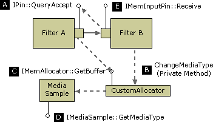

[The feature associated with this page, DirectShow, is a legacy feature. It has been superseded by MediaPlayer, IMFMediaEngine, and Audio/Video Capture in Media Foundation. Those features have been optimized for Windows 10 and Windows 11. Microsoft strongly recommends that new code use MediaPlayer, IMFMediaEngine and Audio/Video Capture in Media Foundation instead of DirectShow, when possible. Microsoft suggests that existing code that uses the legacy APIs be rewritten to use the new APIs if possible.]
This mechanism enables an input pin to propose a format change to its upstream peer. The downstream filter must attach a media type to the sample that the upstream filter will obtain in its next call to IMemAllocator::GetBuffer. In order to do this, however, the downstream filter must provide a custom allocator for the connection. This allocator must implement a private method that the downstream filter can use to set the media type on the next sample.
The following steps occur:
QueryAccept returns S_OK, the downstream filter calls the private method on its allocator in order to set the media type. Within this private method, the allocator calls IMediaSample::SetMediaType on the next available sample (B).If the upstream filter accepts the format change, it must also be able to switch back to the original media type, as shown in the following diagram.

The main examples of this kind of format change involve the DirectShow video renderers.
QueryAccept to report the new stride, which is specified in the biWidth member of the BITMAPINFOHEADER structure. The source and target rectangles in the VIDEOINFOHEADER or VIDEOINFOHEADER2 structure identify the region where the video should be decoded.Implementation Note
It is unlikely that you will write a filter that needs to request upstream format changes, since this is mainly a feature of video renderers. However, if you write a video transform filter or a video decoder, your filter must respond correctly to requests from the video renderer.
A trans-in-place filter that sits between the video renderer and the decoder should pass all QueryAccept calls upstream. Store the new format information when it arrives.
A copy-transform filter (that is, a non-trans-in-place filter) should implement one of the following behaviors:
The following pseudo-code shows how you might implement a copy-transform filter (derived from CTransformFilter) that can switch between YUV and RGB output types. This example assumes that the filter does the conversion itself, rather than passing the format change upstream.
HRESULT CMyTransform::CheckInputType(const CMediaType *pmt)
{
if (pmt is a YUV type that you support) {
return S_OK;
}
else {
return VFW_E_TYPE_NOT_ACCEPTED;
}
}
HRESULT CMyTransform::CheckTransform(
const CMediaType *mtIn, const CMediaType *mtOut)
{
if (mtOut is a YUV or RGB type that you support)
{
if ((mtIn has the same video dimensions as mtOut) &&
(you support the mtIn-to-mtOut transform))
{
return S_OK;
}
}
// otherwise
return VFW_E_TYPE_NOT_ACCEPTED;
}
// GetMediaType: Return a preferred output type.
HRESULT CMyTransform::GetMediaType(int iPosition, CMediaType *pMediaType)
{
if (iPosition < 0) {
return E_INVALIDARG;
}
switch (iPosition)
{
case 0:
Copy the input type (YUV) to pMediaType
return S_OK;
case 1:
Construct an RGB type that matches the input type.
return S_OK;
default:
return VFW_S_NO_MORE_ITEMS;
}
}
// SetMediaType: Override from CTransformFilter.
HRESULT CMyTransform::SetMediaType(
PIN_DIRECTION direction, const CMediaType *pmt)
{
// Capture this information...
if (direction == PINDIR_OUTPUT)
{
m_bYuv = (pmt->subtype == MEDIASUBTYPE_UYVY);
}
return S_OK;
}
HRESULT CMyTransform::Transform(
IMediaSample *pSource, IMediaSample *pDest)
{
// Look for format changes from downstream.
CMediaType *pMT = NULL;
HRESULT hr = pDest->GetMediaType((AM_MEDIA_TYPE**)&pMT);
if (hr == S_OK)
{
hr = m_pOutput->CheckMediaType(pMT);
if(FAILED(hr))
{
DeleteMediaType(pMT);
return E_FAIL;
}
// Notify our own output pin about the new type.
m_pOutput->SetMediaType(pMT);
DeleteMediaType(pMT);
}
// Process the buffers
if (m_bYuv) {
return ProcessFrameYUV(pSource, pDest);
}
else {
return ProcessFrameRGB(pSource, pDest);
}
}
Â
Â